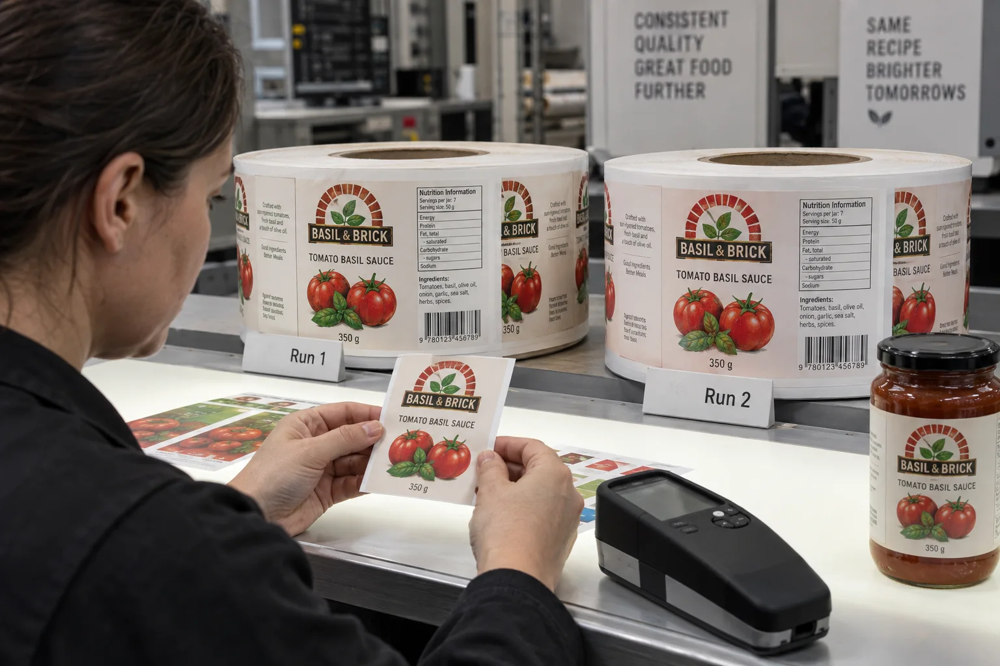

The reorder email that sounds complete but is not
'Same as last time' is one of the shortest briefs we receive. It is also one of the least precise. Did the buyer mean the same file, the same label material, the same printed red under store lighting or the same impression next to old stock? I would ask for the previous order number and a retained production sample before promising a match.
PRINTING United Alliance explains that color can drift with substrate, inks, calibration and machine condition. Its process-control discussion supports keeping a target and measuring over time; it does not promise a zero-difference reprint.
A sauce brand with old and new stock on one shelf
Imagine a composite sauce brand adding new jars while the retailer still has the earlier batch. A small shift toward orange in the tomato illustration becomes obvious when both facings sit together. The founder sends a phone photo of the shelf. I would take that seriously, but not use the phone image as the sole acceptance proof. We need the actual old label and new label viewed in consistent light.
A second buyer changes from coated paper to a matte film because its jars now see more condensation. It still asks for 'the exact same red.' Here I would explain that the face material and finish can alter color appearance. The new construction may be the right operational choice, but a fresh physical approval is sensible. Pretending the old PDF can eliminate that tradeoff would invite a dispute.
Define the reference hierarchy
| Reference | Good for | Limit |
|---|---|---|
| Approved artwork file | Copy, layout and intended color values | Not a finished-print appearance guarantee |
| Contract or production proof | Agreed target under stated conditions | May differ if substrate or process changes |
| Retained production label | What the buyer actually accepted | Can age or be stored poorly |
| Current press sample | Comparison before the new run completes | Needs agreed light and decision maker |
I would label the retained sample with SKU, artwork revision, material, finish, production date and the order it represents. Keep it away from strong light, heat and contamination. If the old sample has visibly faded, agree whether the aim is the original approved target or the aged pack now on shelf.
Agree how color will be judged
PRINTING United's color-consistency overview points to standardized lighting, calibrated systems, verified proofing and communication. For a repeat job, I would agree which colors matter most, which physical reference is primary, who approves the first-off sample and what measurement method applies. If numerical color tolerance is needed, have the printer and buyer establish it for the chosen process rather than copying an unrelated specification.
Check both the graphic and the final pack. A dark sauce behind a clear label, a new matte laminate or a different jar color can change perceived appearance even when the printed ink is controlled. Record those package changes instead of treating them as a mysterious press failure.
Our buying view
Do not sell 'perfect match' as a free add-on
It is tempting to answer a reorder with one line and keep the job moving. I would rather spend ten minutes asking for the retained sample and material history. That may reveal a genuine change in the brief. A buyer who needs side-by-side shelf consistency deserves a defined approval step, not a comforting promise that the printer cannot objectively test.
Reorder checklist
- Previous order and approved artwork revision.
- Retained physical target and how it was stored.
- Current face stock, adhesive, ink system and finish.
- Critical colors and agreed viewing conditions.
- First-off approval, sampling and response to a mismatch.
For the original approval stage, compare digital and contract color proofs. For specifying spot colors versus process print, use Pantone versus CMYK labels.
Frequently asked questions
Can the same PDF guarantee the same printed color?
No. Ink, face stock, finish, equipment condition and viewing light can change the appearance. A controlled reference and process agreement are more useful.
Is a phone photo enough to reject a color run?
A photo can document a concern, but lighting and camera processing make it a poor sole acceptance standard. Compare physical samples under agreed conditions.
Should every color have one universal tolerance?
No. Critical brand colors, printing method, substrate and the buyer's visual expectations should shape a mutually agreed acceptance plan.
Related buyer guides
Review your label specification
Send package photos, label dimensions, material details, quantity and application conditions. Include good and failed samples where possible so the discussion starts with evidence.